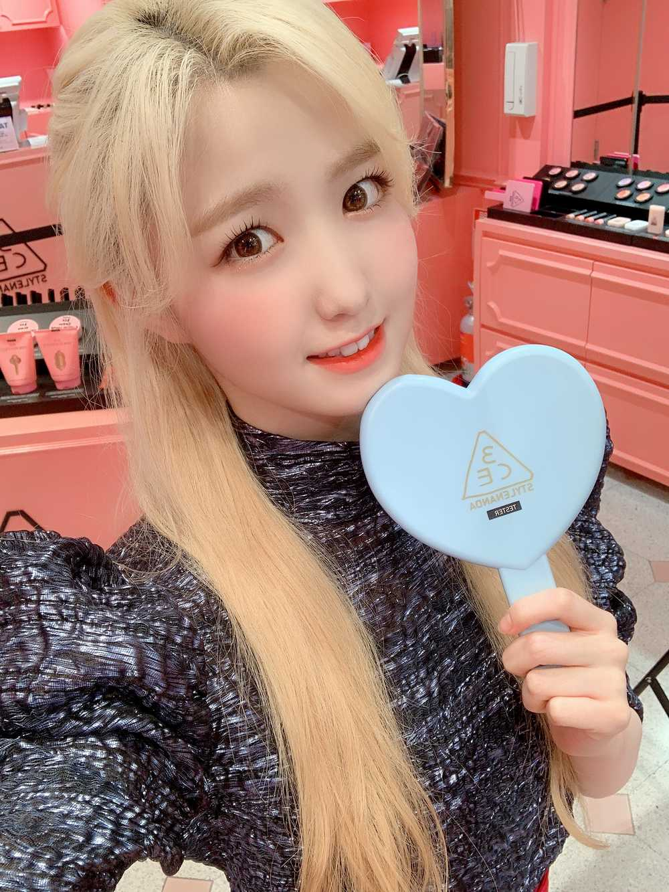

こんばんは🌇
ひいだよ🍓

今日はじめてのメールが
もうこんな時間に😣
ごめんね〜😅
今日はユッケを食べようと思ったんだけど
集合時間まで時間があんまりなかったから
食べられなかったのね😣
それで集合5分前になってマネージャーさんに
「どこに行けばいいですか？」って連絡したら
前のスケジュール押してて2時間くらい待って〜って言われて泣いた😂笑
全然頼めたやーん😭
でもそのあとにチェヨンオンニが
食べてたから少しもらった😇💕
美味しかったな〜🥺
チェヨンオンニのおかげで
結果食べられてよかった👍✨笑
コマウォヨオンニ〜☺️☺️
あ、ここで韓国語講座💡
韓国語で「ありがとう」は
いろんな種類があるよ！！
定番の감사합니다（カムサハムニダ）は
すごく丁寧な言い方！！
감사해요（カムサヘヨ）と
고마워요（コマウォヨ）は
親しい年上の人に使うかな！！
고마워（コマウォ）が
年下とか同い年の人に使う
いわゆるタメ口かな😊？
見やすくすると…
감사합니다>감사해요=고마워요>고마워 かな？
ひいの理解の上では
こんな順番だと思う😅
是非覚えてみてね〜👼🏻
私は焼肉屋さんで食べらユッケより
デリバリーで頼む方が好き🤗
焼肉屋さんのユッケって高いけど
デリバリーのはそれよりも安く食べられるし
そっちの方がひいは好きなんだよね〜！
焼肉屋さんのは多分ニンニク入ってる…
だからかな🧐🧐
是非食べ比べてみてほしい〜‼️
それではまた〜
오늘은 채연언니 덕분에 육회를 먹을 수 있었어요!!
언니가 주먹밥이랑 같이 먹는게 맛있다고 알려줬어요!
진짜 맛있어서 놀랐어요!!
ニヤリの表情😏
ばいばーい👋
ひいまる🥟